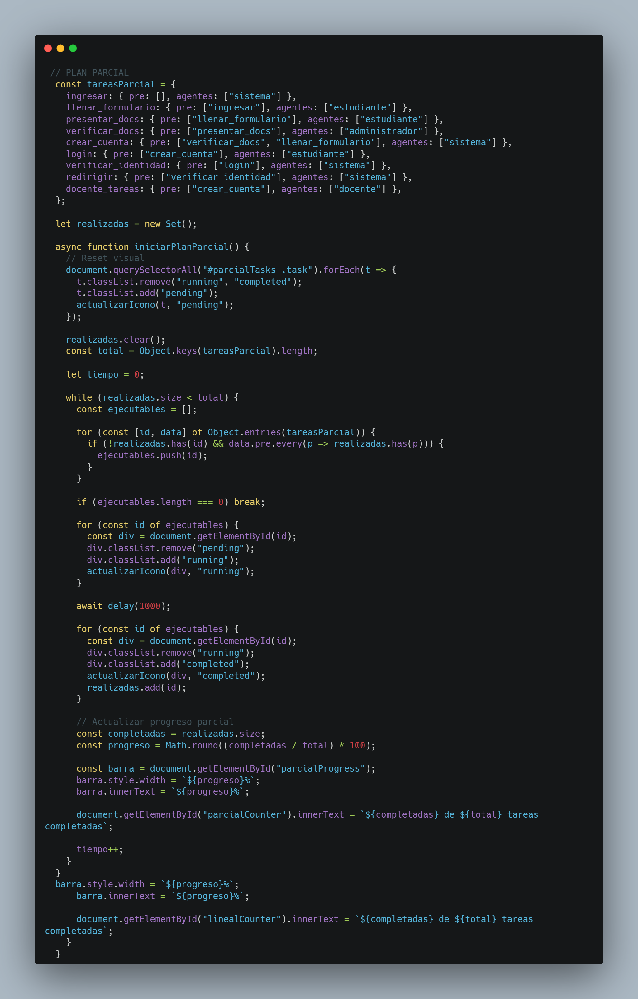

¿Cómo funciona?
En el Plan Lineal, las tareas se ejecutan una tras otra, en el orden en que aparecen.
Cada tarea espera que la anterior finalice para comenzar. Es ideal para procesos estrictamente secuenciales.
Ingresar a la página web
Llenar el formulario de inscripción
Presentar documentos en físico
Verificar documentos
Crear cuenta del estudiante
Login del estudiante
Verificación de identidad y paralelo
Redirección a sección de clases y tareas
0%
0 de 8 tareas completadas
Plan Parcial (con dependencias)

Imagen Ampliada
¿Cómo funciona?
En el Plan Parcial, las tareas se ejecutan según sus dependencias previas.
Varias tareas pueden ejecutarse al mismo tiempo si todas sus tareas previas ya se han completado.
Esto simula un proceso paralelo o colaborativo.